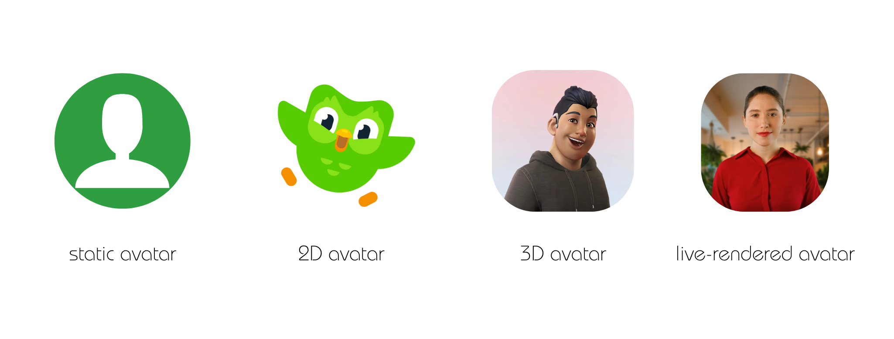

The way we interact with machines is evolving rapidly, and digital avatars are at the forefront of that transformation. As conversational AI systems become more powerful and human-like, avatars are reshaping not just how these systems look, but how we experience and engage with them. But what exactly is a digital avatar and why does it matter in the world of conversational AI?
The word avatar has a surprisingly ancient origin. It comes from Hindu mythology, where it describes a deity descending to Earth in human or animal form. This concept of a divine embodiment inspired the term’s digital use. In 1985, game designer Richard Garriott borrowed the word for Ultima IV: Quest of the Avatar, a computer game where players were not just controlling a character, but were meant to embody their own values and make ethical decisions within the game world. This philosophical approach gave the term a new resonance, and it quickly spread to other games and digital platforms throughout the 1990s.
Today, digital avatars appear in many forms. Some are static, simple icons or profile pictures that visually represent a user or system without any animation. These are easy to implement but limited in emotional depth. Others are animated in two dimensions, like the familiar Duolingo owl, which can move, react, and add a layer of expressiveness to the interaction. Then there are 3D avatars, fully rendered characters that gesture, speak, and move in space, providing a more immersive and lifelike experience, though they typically require more computing power and technical complexity. The most advanced category includes live-rendered avatars, digital characters animated in real time through voice input, facial tracking, or AI-generated responses. These avatars can make eye contact, change expressions, and respond fluidly to user interactions. Platforms like Synthesia or OpenAI’s avatar experiments are prime examples. What sets them apart isn’t just their realism but the expectations they generate. A cartoonish character might be forgiven for the occasional robotic reply. But a hyper-realistic face, one that mirrors human emotion and gestures, carries a different weight: Users expect it to behave like a real person. That added realism brings both promise and pressure.

The rise of digital avatars in AI isn't happening in a vacuum. Recent advances in computer vision, real-time rendering, and neural animation have made it technically feasible to create expressive, believable avatars that operate live. These breakthroughs, combined with the growing capabilities of large language models like GPT-4, have enabled interactions that feel more fluid, responsive, and human. But technology alone doesn’t explain their popularity. There's increasing demand for more engaging, emotionally intelligent user experiences, especially in customer service, healthcare, and education. Avatars offer something that text or voice alone often can’t: a visual and emotional anchor. When users see a face, even a digital one, they’re more likely to feel like someone is listening. That sense of presence matters. The benefits go beyond emotional connection. Avatars can build trust by making a chatbot appear more competent or professional. They give brands a unique visual identity and tone, and they can improve accessibility for users who rely on visual cues or nonverbal communication. From a UX perspective, avatars can make digital interactions feel more intuitive and human-centered.
There’s also a growing body of research supporting this shift. A study found that user trust was closely linked to how human-like a chatbot avatar appeared. Another experiment showed that people lodged complaints more comfortably and reported higher satisfaction when the avatar looked more like a real person. And a third study found that anthropomorphism (the human-like qualities of a chatbot) has a measurable impact on user behavior and satisfaction. These findings reinforce what designers and researchers are increasingly seeing in practice: How a chatbot looks and behaves influences how it’s perceived.
Despite all the excitement, digital avatars aren’t without risks. One of the biggest concerns is how human they should be. At what point does a lifelike avatar stop being helpful and start feeling deceptive? The line between realism and manipulation becomes blurry when avatars look indistinguishable from real people. This opens up ethical debates around consent, transparency, and the rise of deepfakes.
Another challenge lies in representation. What kinds of faces and voices are chosen to represent these systems? Are we unconsciously reinforcing stereotypes about who looks competent, trustworthy, or friendly? Without intentional design choices, avatars can easily reflect the same biases we’re trying to remove from the data behind AI.
Digital avatars are changing the way we talk to machines. By adding warmth, personality, and emotional depth to our interactions, they’re opening up new possibilities for more human-centered AI. They make chatbots and virtual assistants not only more engaging, but also more trustworthy, accessible, and emotionally resonant.
But with this power comes responsibility. Designers and developers must think carefully about how avatars are built, what they represent, and how they shape user expectations. The future of conversational AI may well be visual, expressive, and emotionally intelligent, but only if we design it that way.
In the end, an avatar is more than a digital face. It’s a bridge between human users and machine intelligence, and how we design that bridge will define the quality of our interactions for years to come.